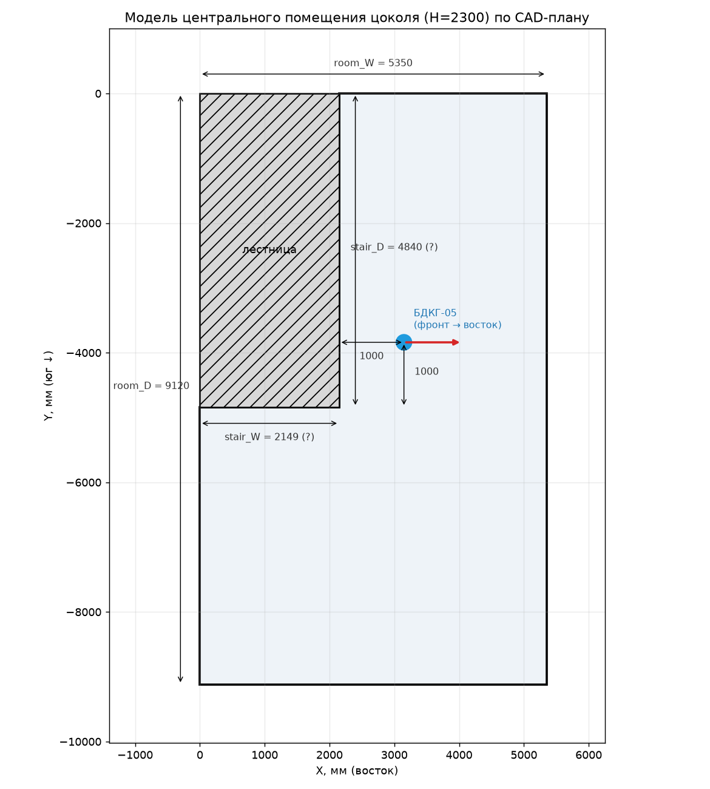
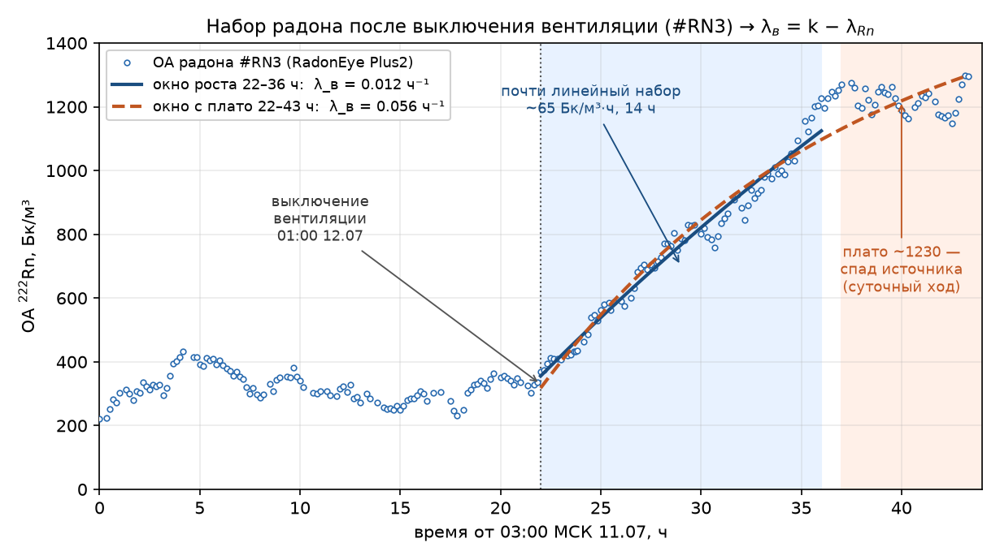
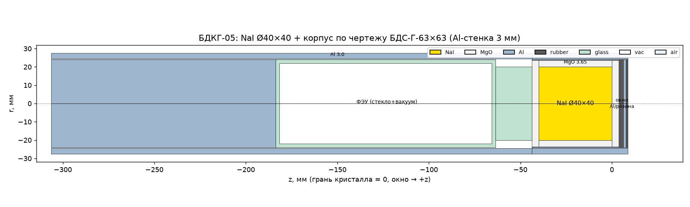
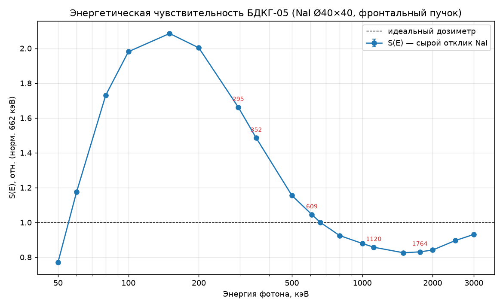
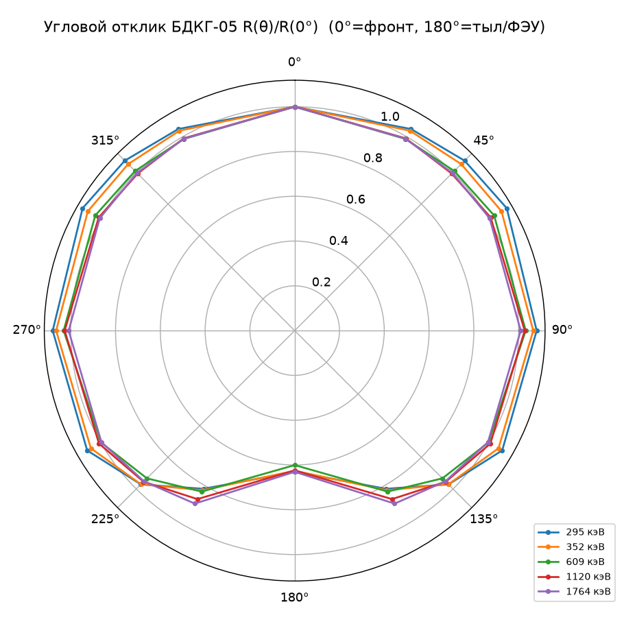
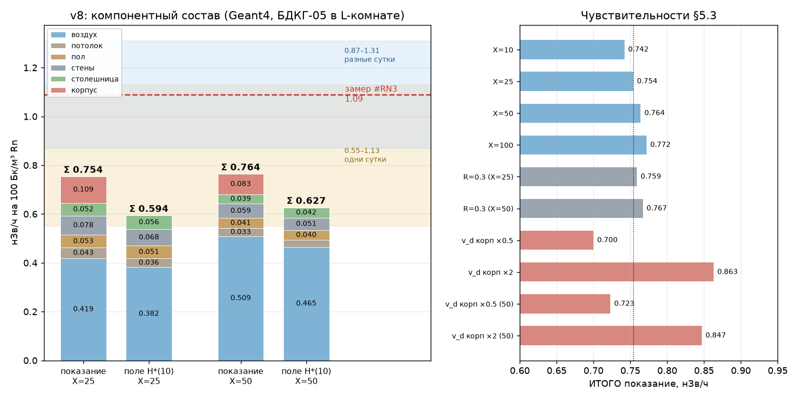
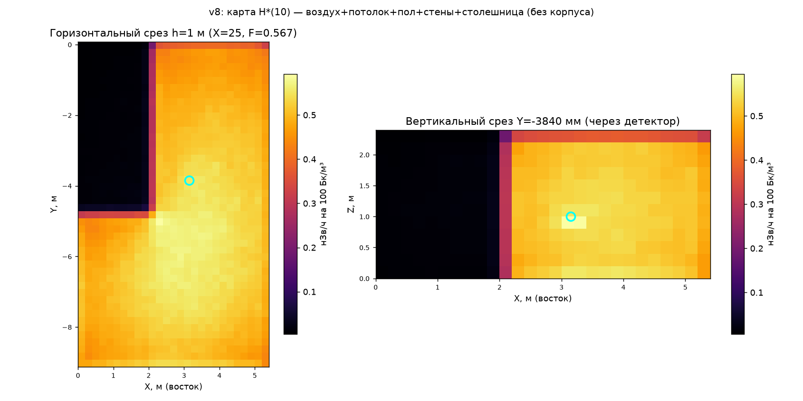

Контур «Радоновый риск» · линия #RN4 · v9.1 · 22.07.2026
Расчёт приращения H*(10) от 214Pb и 214Bi на единицу ОА радона при входных величинах, восстановленных из данных эксперимента #RN3[15] (БДКГ-05), по фактической геометрии помещения. Аналитическая модель и независимый расчёт Geant4: истинное поле ≈ 0.59–0.64, ожидаемое показание прибора ≈ 0.75–0.76 нЗв/ч на 100 Бк/м³.
Исследование выполнено ИИ-агентами (Anthropic Claude) под руководством и контролем оператора; Монте-Карло верификация — независимым ИИ-контуром; версии статьи проходили аудит третьим ИИ-агентом. Подробности — §9 «Заявление об использовании ИИ».
Задача: связать объёмную активность 222Rn с приращением мощности амбиентного эквивалента дозы Ḣ*(10) гамма-излучения короткоживущих ДПР (214Pb, 214Bi) в точке детектора; независимо проверить коэффициент эксперимента #RN3[15] — +1.09 нЗв/ч на 100 Бк/м³ (95 % доверительный интервал (ДИ) 1.03–1.16; собственная погрешность детектора ±20 % расширяет полосу до 0.87–1.31).
Приборы и помещение: сцинтилляционный блок детектирования БДКГ-05 (кристалл NaI(Tl) Ø40×40 мм, основная погрешность ±20 %) на стальной подставке 370×420 мм (лист 1.5 мм), центр кристалла в 1.0 м от стены, высота ~1 м; монитор радона RadonEye Plus2 на том же уровне; Г-образная комната цокольного этажа по обмерам CAD-плана (охват 5.35×9.12 м, лестничный блок 2.13×4.84 в углу, высота 2.3 м, V = 88.5 м³), бетонное перекрытие пола 30 см.
Методы: стационарная камерная модель Jacobi с раздельными свободной и присоединённой фракциями и нуклид-специфичным осаждением по камерным измерениям Leonard (1994); кратность воздухообмена измерена по динамике набора радона после выключения вентиляции (0.01–0.07 ч⁻¹), скорость присоединения к аэрозолю задана по нормативному уровню запылённости (X = 25–50 ч⁻¹), коэффициент равновесия не задаётся, а вычисляется моделью (F = 0.57–0.68); перенос — прямое интегрирование ядра точечного источника по полному набору гамма-линий LNHB/DDEP (110 линий E ≥ 0.2 МэВ, ≥ 99 % гамма-энергии ДПР) с усреднением поля по объёму кристалла и учётом затенения лестничным блоком; комптоновское рассеяние — модель полости с дозовым альбедо бетона по формуле Чилтона–Хаддлстона; учтены экранирование стальной столешницей и осаждение на её нижнюю плоскость. Независимая верификация — численная модель прибора и помещения в Geant4 (§5): полная геометрия блока детектирования, транспорт по тем же 110 линиям, осаждение на корпус прибора, энергетический и угловой отклик.
Вывод: истинное поле — 0.59–0.64 нЗв/ч на 100 Бк/м³ (аналитика 0.59–0.64, Geant4 0.594–0.627 — согласие двух независимых методов); ожидаемое показание БДКГ-05 выше поля в ×1.22–1.27 за счёт осаждения ДПР на корпус прибора (11–14 % показания) и близких осаждённых источников: 0.75–0.76 нЗв/ч на 100 Бк/м³. Сравнение с замером #RN3 — в тех же единицах, нЗв/ч на 100 Бк/м³: измеренный между двумя стабильными плато (вентиляция включена / выключена) коэффициент — 1.09 (95 % ДИ 1.03–1.16), с приборной погрешностью ±20 % — полоса 0.87–1.31. Рассчитанное показание лежит ниже полосы: в 1.14–1.15 раза ниже её нижнего края и в 1.43–1.45 раза ниже центра; механизм подтверждён по порядку величины, кандидаты остатка — §6.4. Энергетический и угловой отклик прибора по спектру ДПР искажения не вносят (свёртка 1.004); итог слабо чувствителен к запылённости и коэффициенту равновесия (сценарий F = 0.37–0.40 меняет показание на −2 %, поле на −10 %).
Ключевые слова: радон, дочерние продукты распада, 214Pb, 214Bi, коэффициент равновесия, осаждение аэрозолей, камерная модель Якоби, амбиентный эквивалент дозы H*(10), гамма-фон помещений, дозовое альбедо, Монте-Карло, Geant4.
Гамма-фон, связанный с радоном, формирует не сам 222Rn (благородный газ, практически чистый α-излучатель на своём звене), а два звена его цепочки распада — 214Pb (T½ = 26.8 мин) и 214Bi (T½ = 19.7 мин), дающие линии от 0.24 до 2.7 МэВ. Промежуточный 218Po (T½ = 3.1 мин) гаммой не светит, но, осаждаясь наиболее интенсивно из всех трёх, служит основным «поставщиком» поверхностной активности гамма-эмиттеров через распад на месте.
Убыль ДПР из воздуха идёт двумя каналами с противоположным дозиметрическим следствием: вентиляция удаляет активность из помещения, тогда как осаждение сохраняет её на ограждающих поверхностях, где она продолжает излучать. Соотношение каналов задаёт коэффициент равновесия F ∈ (0, 1) и распределение дозы между воздушной и поверхностной компонентами.
Мотивация работы — независимая проверка коэффициента, измеренного в эксперименте #RN3: приращение мощности амбиентного эквивалента дозы +1.09 нЗв/ч на 100 Бк/м³ (95 % ДИ 1.03–1.16; сверх статистики — собственная погрешность детектора ±20 %, полоса 0.87–1.31, §6.1) при выключении вентиляции в подвале[15]. Построена расчётная модель «от первых принципов»: баланс ДПР в воздухе и на поверхностях → активности источников → перенос гамма-излучения к детектору → H*(10). Входные величины по возможности восстановлены из данных самого эксперимента: кратность воздухообмена измерена по динамике набора радона, геометрия помещения — по CAD-плану здания, геометрия стенда — по фотографии, материал подставки — по факту (сталь 1.5 мм); коэффициент равновесия при этом вычисляется моделью, а не задаётся предположением.
Проверка выполнена двумя независимыми методами: аналитической моделью (камерный баланс + прямое интегрирование ядра точечного источника, §3–§4) и численным расчётом методом Монте-Карло в Geant4[19] с полной геометрией блока детектирования и помещения (§5). Второй метод дополнительно отвечает на вопросы, принципиально недоступные аналитике: вклад осаждения ДПР на корпус самого прибора и искажения его энергетического и углового отклика по спектру ДПР.
Изложение идёт от входных данных (§2) через камерную модель и перенос (§3) к результатам аналитики (§4), Монте-Карло модели прибора (§5) и сверке с натурным замером (§6).
Помещение. Г-образная комната цокольного этажа по обмерам CAD-плана здания (внутренние размеры): охватывающий прямоугольник 5.35 × 9.12 м с лестничным блоком 2.13 × 4.84 м в углу, высота 2.3 м; V = 88.5 м³, площадь пола/потолка по 38.5 м², стен — 66.6 м² (S/V = 1.62 м⁻¹). Конструктив: стена лестничного блока — кирпич 335 мм, остальные стены — бетонные блоки ФБС, все оштукатурены и оклеены флизелиновыми обоями; потолок — бетонное перекрытие; пол — паркетная доска по бетонной плите 30 см. Кирпичная стена лестничного блока (~4.7 длины свободного пробега при 0.6 МэВ) непрозрачна для гамма-излучения: часть комнаты за ней затенена и в переносе исключена.

Стенд. Детектор — сцинтилляционный блок БДКГ-05 (кристалл NaI(Tl) Ø40×40 мм) на стальной подставке 370 × 420 мм (лист 1.5 мм): центр кристалла в 1.0 м от стены лестничного блока и в 1.0 м от её южного торца (Рис. 1), на высоте ≈ 1 м, ось горизонтальна (восток–запад, тыльная часть с ФЭУ обращена к стене), 3 см над столешницей. Монитор радона RadonEye Plus2 — на том же уровне.
Входные величины. Кратность воздухообмена измерена по динамике набора радона после выключения вентиляции (метод — §3.4): λв ≈ 0.01–0.07 ч⁻¹, в расчётах принято 0.02 ч⁻¹ — помещение в этом состоянии почти герметично. Запылённость воздуха задана на нормативном уровне: ПДК по взвешенным частицам РМ2.5 (0.035 мг/м³ среднесуточно) для аккумуляционной моды ~0.2 мкм отвечает счётной концентрации ~5·10³–10⁴ см⁻³, то есть скорости присоединения ДПР к аэрозолю X ≈ 25–50 ч⁻¹[2]. Скорости осаждения — прямые камерные измерения семи бытовых материалов, нормированные на стандартную комнату[4] (vd = λос·V/S, м/ч):
| Материал | v(218Po) | v(214Pb) | v(214Bi) | F |
|---|---|---|---|---|
| Бетон | 4.6 | 0.43 | 0.04 | 0.50 |
| Дерево (лак) | 5.2 | 0.60 | 0.04 | 0.47 |
| Стекло | 5.7 | 1.24 | 0.08 | 0.41 |
| Гипсокартон | 6.2 | 0.67 | 0.03 | 0.43 |
| Потолочная плитка (шероховатая) | 8.9 | 0.58 | 0.05 | 0.32 |
| Ковёр | 9.2 | 2.04 | 0.10 | 0.33 |
| Штора | 17.0 | 3.59 | 0.16 | 0.22 |
Привязка к геометрии: для осаждения работает поверхность контакта с воздухом, а не конструктив — потолок — бетон, стены — гипсокартон (гладкая бумажная поверхность флизелиновых обоев), пол — дерево (лак), подставка — стекло как ближайший гладкий непористый материал (для стали прямых данных нет; металл как проводник статический заряд не удерживает, электростатической составляющей осаждения нет). Для комптоновского рассеяния, напротив, обои и штукатурка радиационно прозрачны — работает субстрат (кирпич/бетон), поэтому альбедо принято бетонным. Ядерные данные: полный набор гамма-линий LNHB/DDEP[11] — 110 линий с E ≥ 0.2 МэВ и выходом ≥ 0.03 % (16 линий 214Pb + 94 линии 214Bi), покрывающих 99.5 % и 99.0 % гамма-энергии нуклидов (Σ E·y = 0.2217 из 0.2228 и 1.4532 из 1.4678 МэВ/распад); μ/ρ и μen/ρ воздуха — NIST[10]; переход керма → H*(10) — h*K(E)[9][12].
Расчёт разбит на три независимо контролируемых шага: баланс активностей ДПР в воздухе и на поверхностях (§3.1–§3.2), перенос излучения к точке детектора (§3.3) и дозиметрическая свёртка; вклад каждого шага в итог линеен, контроль вычислений — §3.5.
Помещение рассматривается как единая изотропно перемешанная камера (модель Jacobi[1], формулировка с фракциями — Porstendörfer[2]). Стационарный баланс каждого звена цепочки:
Приход от распада родителя записан как λi·Ci−1 — с постоянной распада дочернего нуклида: Ci−1 (активность родителя) равна скорости рождения атомов дочернего, а умножение на λi переводит атомный баланс в баланс активностей.
| Символ | Величина | Ед. | Значение / связь |
|---|---|---|---|
| i | индекс звена цепочки распада | — | 1 → 218Po, 2 → 214Pb, 3 → 214Bi; родитель i−1 = 0 → 222Rn |
| Ci | объёмная активность i-го ДПР в воздухе | Бк/м³ | искомая |
| λi | постоянная распада i-го нуклида | ч⁻¹ | = ln2/T½; Po 13.42, Pb 1.552, Bi 2.111 |
| λв | кратность воздухообмена | ч⁻¹ | измерена: 0.01–0.07; принято 0.02 (§3.4) |
| λос,i | эффективная скорость осаждения i-го нуклида | ч⁻¹ | = Σs vd,i,s·As/V (Табл. 1) |
Основная модель — полная, с раздельными свободной и присоединённой фракциями каждого ДПР: присоединение к аэрозолю со скоростью X, отрыв 214Pb при α-распаде присоединённого 218Po (p = 0.83[7]), нуклид- и материал-специфичное осаждение свободной фракции (Табл. 1), диффузионное осаждение присоединённой (0.1 м/ч[2]) и вертикальный член гравитационного оседания аэрозоля ±vs (vs = 0.012 м/ч для AMD ≈ 200 нм; пол/подставка +, потолок −). Коэффициент равновесия при этом не задаётся заранее, а вычисляется самой моделью:
где fi — доля активности i-го ДПР (сумма фракций) относительно ОА радона C0; 0.105, 0.515, 0.380 — весовые множители ЭРОА, доли потенциальной альфа-энергии на 218Po, 214Pb, 214Bi (UNSCEAR 2000 Annex B, p. 103, § 122[8]).
Для граничных сценариев (ограничивающих оценку снизу) используется одногрупповое приближение (единая эффективная λос,i на нуклид, без разделения фракций): F фиксируется (0.3 или 0.4), а λв восстанавливается обратной задачей из (2). Расхождение одногруппового приближения с полной моделью — единицы процентов (§4.4).
Активность каждого звена на поверхности следует из стационарного баланса «осаждение из воздуха + внутриповерхностное подрастание от родителя = распад». Ключевой механизм — распад осаждённого 218Po непосредственно на поверхности; часть новорождённого 214Pb выбивается отдачей при α-распаде обратно в воздух (фактор отскока R[4]):
Вывод. В установившемся режиме приход атомов на поверхность равен их убыли: λдоч·Nдоч = vd·nвозд + (1−R)·λрод·Nрод, где nвозд = C/λдоч — атомная концентрация в воздухе, а λрод·Nрод = Aрод (каждый распад родителя рождает один атом дочернего). Левая часть — это и есть Aдоч, откуда (3). Контроль: при R = 0 и vPb = vBi = 0 формула обязана давать секулярное равновесие APo = APb = ABi — тест встроен в расчётный скрипт (PASS). В полной модели приток на поверхность складывается из обеих фракций.
где Ai — поверхностные активности, Бк/м²; vi — скорости осаждения на данную поверхность, м/ч (Табл. 1); Ci — объёмные активности в воздухе, Бк/м³; R — фактор отскока (доля 214Pb, выбиваемая обратно в воздух при α-распаде осевшего 218Po). Принято R = 0.5 — расчётная колонка Таблицы 1 источника[4] (теоретический максимум для плоскости); измеренные значения для материалов помещения — 0.29–0.36, бетон не измерялся (экстраполяция ~0.30). Существенно, что vd(214Pb) Таблицы 1 вычислены авторами в предположении R = 0.5, поэтому варьировать R можно только согласованной парой (R, vd(Pb|R)): vPb(R) = vPb(0.5) − (0.5−R)·(vPo/λPo)·(λPb + vPb(0.5)/0.6818); контрольная точка — бетон: R = 0.3 → vd(Pb) = 0.28 м/ч. Эффекты подрастания и прямого осаждения при этом противонаправлены и почти полностью компенсируются: итог по всему диапазону R = 0.29–0.55 меняется лишь на ±0.5 % (§4.4).
Флюенс в точке детектора — прямое интегрирование ядра точечного изотропного источника с экспоненциальным ослаблением в воздухе[13], раздельно по трём источникам (объём воздуха, грани помещения, подставка), каждый со своей активностью:
где G(E) — геометрические факторы объёмного (м) и поверхностного (безразмерный) источников; μ(E) — линейный коэффициент ослабления воздуха, м⁻¹; r — расстояние от элемента источника до точки расчёта; A — объёмная (Бк/м³) или поверхностная (Бк/м²) активность; y — выход линии, фотон/распад[11]; (μen/ρ) — массовый коэффициент поглощения энергии воздуха, м²/кг[10]; h*K(E) — переход воздушная керма → H*(10), Зв/Гр[9][12]. Размерные множители опущены.
Модель источников. (1) Объёмный — активности 214Pb/214Bi равномерно по всему объёму Г-комнаты, детектор внутри. (2) Поверхностные — пол, потолок и шесть участков стен (Рис. 1), каждый со своей активностью по (3) (материал и ориентация различаются), вклады группируются «потолок / пол / стены». (3) Локальный — столешница 370×420 мм с активностью верхней плоскости; источник в сантиметрах от кристалла.
Численное интегрирование. Объём — сетка 5 см послойно; сингулярность ядра при r → 0 снимается аналитически: окрестность радиусом 15 см вокруг детектора интегрируется как равномерный шар, (1 − e−μR)/μ. Грани — сетка 5 см (минимальное r = 1.00 м — до стены лестничного блока, сингулярности нет; осевшая активность — изотропный излучатель на единицу площади, косинусные множители не вводятся). Затенение: элементы объёма и граней без прямой видимости от детектора (за кирпичной стеной лестничного блока) исключаются; торец блока обращён от детектора и вклада не даёт. Фактор G отдельных граней при 0.609 МэВ: пол 0.519, потолок 0.418, стены суммарно 0.547, из них стена лестничного блока (1.0 м от детектора) 0.299 — 55 % вклада стен, восточная стена 0.169 — 31 %; в пределе бесконечной плоскости зависимость от расстояния лишь логарифмическая, (SA/2)·E₁(μd), отсюда слабая чувствительность итога к точному зазору детектор–стена. Подставка — сетка 5 мм, поле усредняется по объёму кристалла (сетка 4 мм, ~800 точек внутри цилиндра): в ближней зоне точечное приближение даёт заметную ошибку.
Комптоновское рассеяние — модель полости. Воздух почти прозрачен (пробег ~80 м), непоглощённый фотон попадает на ограждение, доля aD отражается и вновь облучает комнату; сумма переотражений даёт фактор полости B(E) = 1/(1 − aD(E)), которым умножается доза каждой линии. Интегральное дозовое альбедо бетона aD(E) выведено из первоисточника: формула Чилтона–Хаддлстона[16] с параметрами C, C′ МК-подгонки для толстой бетонной плиты (Табл. I[18]; обзор[17]) численно проинтегрирована по полусфере отражения, отдельно для нормального падения (нижняя оценка) и изотропного облучения стен (центральная); контроль: aD(0.662 МэВ, 0°) = 0.063 при литературных 0.06–0.08. Поправка составляет +6 % (нормальное) … +10 % (изотропное). Ограничения подхода: рассеянная добавка позиционно-независима (позиция детектора учтена только в прямой компоненте), сумма переотражений — эвристика интегрирующей сферы; строгий учёт требовал бы Монте-Карло (как в[3]).
Стальная столешница (1.5 мм). Сквозь столешницу к кристаллу проходит 43 % направлений — 35 % воздушного геометрического фактора и весь вклад пола; лист стали ослабляет этот нижний поток на −0.020 нЗв/ч на 100 Бк/м³ (расчёт по всем 110 линиям с наклонными толщинами, NIST-данные железа). Одновременно нижняя плоскость столешницы — поверхность осаждения в ~4.5 см от кристалла, светящая сквозь ту же сталь: +0.035…+0.045 нЗв/ч на 100 Бк/м³ (активность нижней плоскости принята как у потолка — такой же обращённой вниз поверхности). Нетто-поправка +0.013…+0.028 нЗв/ч на 100 Бк/м³ входит в базовую оценку.
Кривая набора радона в эксперименте #RN3[15] сама содержит λв. Баланс радона в перемешанном воздухе комнаты — приход от постоянного источника S (поступление грунтового газа) за вычетом убыли по двум каналам, вентиляции и собственного распада:
При постоянном S концентрация выходит на баланс по экспоненте:
Постоянная распада радона известна точно (λRn = ln2/T½ = 0.00755 ч⁻¹), поэтому измеренная «скорость закругления» k напрямую даёт вентиляцию: λв = k − λRn. Подгонка трёхпараметрическая: при каждом пробном k — линейный МНК по базису {1, e−k t} (даёт C∞ и C₀), выбирается k с наименьшей невязкой; 95%-полоса — по профилю невязки.

Почти линейный рост в течение 14 часов без выполаживания — признак почти герметичного помещения: постоянная времени τ = 1/k велика по сравнению с окном наблюдения, и видна лишь ранняя, слабо изогнутая часть экспоненты. Результат подгонки зависит от того, включать ли плато:
| Окно подгонки | Точек | k, ч⁻¹ | C∞, Бк/м³ | λв = k − λRn, ч⁻¹ |
|---|---|---|---|---|
| Чистый рост (22–36 ч) | 79 | 0.020 | 3504 (нефизично) | 0.012 [0.012–0.021] |
| С плато (22–43 ч) | 118 | 0.064 | 1638 | 0.056 [0.043–0.070] |
В окне чистого роста кривая почти прямая, асимптота не определяется — экстраполяция даёт нефизично высокое C∞ ≈ 3500 Бк/м³; окно надёжно говорит лишь, что λв мал (≲ 0.02 ч⁻¹). В окне с плато формальная подгонка объясняет выполаживание вентиляционным балансом и поднимает λв до 0.056, но плато наступает резко (за ~1 ч) и точно в суточный максимум — это спад источника, а не гладкое экспоненциальное насыщение (тот же суточный ход виден и до эксперимента), поэтому 0.056 — верхняя граница. Итоговая оценка λв ≈ 0.01–0.07 ч⁻¹, физически — почти герметичное помещение (λв ≲ 0.05); лаг RadonEye ~30 мин на фоне 14-часового набора пренебрежим. В расчётах принято λв = 0.02 ч⁻¹; чувствительность итога к диапазону 0.01–0.05 — +0.8…−2.3 % (§4.4), поскольку при столь слабом воздухообмене баланс ДПР задаётся осаждением, а не вентиляцией. Этот результат исключает и попытку объяснить наблюдаемое неравновесие одной вентиляцией без осаждения — потребовалась бы λв ≈ 1.4–2.6 ч⁻¹ (§6.3).
В расчётный скрипт встроены обязательные проверки: тест секулярного равновесия для (3) (при R = 0 и нулевом прямом осаждении APo = APb = ABi; при провале — аварийный останов), контроль невязки |F − Fцель| после бисекции в решателях. Воздушная компонента дополнительно верифицирована независимой угловой квадратурой (1.28·10⁶ лучей, радиальный интеграл аналитический — сингулярности нет в принципе): совпадение с сеточным методом +0.4 %. Сходимость сеток: измельчение вдвое меняет фактор граней в 5-м знаке, подставки — на 0.04 %. Линейность дозы по ОА радона точна алгебраически и подтверждена экспериментально (vd не зависит от ОА[6]).
При измеренной вентиляции коэффициент равновесия определяется запылённостью — скоростью присоединения ДПР к аэрозолю X (§3.1):
| X (присоединение к аэрозолю), ч⁻¹ | Уровень запылённости | F (вычислен) | Свободная доля 218Po |
|---|---|---|---|
| 5 | очень чистый воздух | 0.30 | 0.73 |
| 10 | чистый воздух | 0.41 | 0.58 |
| 25 | ≈ ПДК РМ2.5 | 0.57 | 0.35 |
| 50 | типичное жильё | 0.68 | 0.21 |
| 100 | запылённое | 0.76 | 0.12 |
Базовый диапазон X = 25–50 даёт F = 0.57–0.68 (ЭРОА 57–68 Бк/м³ на 100 Бк/м³ ОА). Запылённость в помещении не измерялась, поэтому F здесь — расчётная величина при нормативном аэрозоле. Прямые измерения коэффициента равновесия в помещениях с отключённой вентиляцией дают F = 0.35–0.45[21]; в рамках модели при измеренной λв = 0.02 ч⁻¹ такие значения отвечают чистому воздуху (X ≈ 8–10 ч⁻¹) и рассмотрены как отдельный сценарий (§4.3, §4.4). Достичь F ≤ 0.45 вентиляцией при нормативном аэрозоле нельзя — потребовалась бы λв ≈ 0.7–1 ч⁻¹, исключённая измеренной динамикой набора (§3.4).
| Нуклид | X = 25 | X = 50 |
|---|---|---|
| 218Po | 80.4 | 86.7 |
| 214Pb | 56.2 | 67.9 |
| 214Bi | 51.0 | 62.3 |
| Поверхность | X = 25 | X = 50 | ||
|---|---|---|---|---|
| 214Pb | 214Bi | 214Pb | 214Bi | |
| Потолок (бетон) | 19.2 | 21.7 | 14.1 | 16.9 |
| Стены (обои) | 25.5 | 28.4 | 18.4 | 21.5 |
| Пол (паркет) | 22.2 | 25.4 | 16.6 | 20.1 |
| Подставка (сталь) | 23.1 | 26.3 | 17.1 | 20.6 |
Рост запылённости перекачивает активность с поверхностей в воздух: аэрозоль перехватывает 218Po до осаждения (свободная доля 0.35 → 0.21), поверхностное подрастание гаснет, воздушные 214Pb/214Bi растут. В точке измерения эти сдвиги почти компенсируются в дозе (§4.4).
| Компонента | X = 25 | X = 50 |
|---|---|---|
| Воздух комнаты | 0.332 | 0.405 |
| Потолок (бетон) | 0.027 | 0.021 |
| Стены (обои) | 0.047 | 0.035 |
| Пол (паркет) | 0.040 | 0.031 |
| Подставка (сталь, верх) | 0.081 | 0.063 |
| Прямые фотоны, итого | 0.527 | 0.555 |
| + комптон (изотропное альбедо) | 0.579 | 0.610 |
| + столешница (экран −0.020; нижняя плоскость +0.035…+0.045) | +0.015…+0.025 | +0.015…+0.025 |
| Базовая оценка поля | 0.59–0.60 | 0.63–0.64 |
Базовая оценка истинного поля: 0.59–0.64 нЗв/ч на 100 Бк/м³, центральное значение ≈ 0.61. При высоком равновесии доминирует воздушная компонента (63–73 % прямых фотонов); подставка — крупнейший единичный поверхностный источник (большой телесный угол вплотную к кристаллу). Это оценка поля — без инструментальных эффектов самого прибора (осаждение на корпус, §5); альбедо-модель полости даёт нижнюю оценку рассеяния: физический расчёт комптона поднимает поле на +2.5–2.8 % (§5.3).
Сценарий F = 0.37–0.40 (чистый воздух). Прямым измерениям коэффициента равновесия при отключённой вентиляции (F = 0.35–0.45) в модели отвечает X ≈ 8–10 ч⁻¹: поле 0.52–0.53 нЗв/ч на 100 Бк/м³, т.е. лишь на 9–12 % ниже базы — убыль воздушной компоненты (0.37 → 0.22–0.24, с альбедо) почти компенсируется ростом поверхностной (0.21 → 0.29–0.31): ДПР, не найдя аэрозоля, осаждаются на стены и подставку вокруг детектора и продолжают излучать. Показание прибора при этом меняется ещё слабее — на −2 % (§5.4).
| Фактор | Эффект | Комментарий |
|---|---|---|
| Сценарий F = 0.37–0.40 (X = 8–10, чистый воздух) | −9…−12 % | крупнейшая неопределённость поля; по прямым измерениям F при отключённой вентиляции[21]; показание прибора −2 % (§5.4) |
| Электростатика обоев: гипотетическое усиление vd(стены) ×2 / ×3 | −9.2 % / −16.6 % | расчётный гипотетический случай; при факте T ≈ 24 °C, RH 52–55 % заряд стекает (влажностная проводимость + ионизация воздуха) — эффект подавлен, ожидаемый вклад 0…−3 % |
| Вариант альбедо (нормальное вместо изотропного) | −4 % | нижняя оценка комптона |
| Физический комптон (Geant4) вместо альбедо-модели | +2.5…+2.8 % | рассеянная доля поля 14.5–15.1 % (§5.3) |
| Запылённость X = 25 ↔ 50 | −3…+2 % | компенсация «воздух ↔ поверхности» в точке измерения |
| Кратность воздухообмена 0.01 ↔ 0.05 ч⁻¹ | +0.8…−2.3 % | измеренный диапазон |
| Материал подставки в осаждении (стекло → бетон) | −1…−2 % | пересчитано на Г-геометрии полной моделью фракций; для стали прямых данных нет |
| Пол: паркет ↔ бетон (материал осаждения) | +0.5 % | паркетная доска лежит по бетонной плите |
| Поправка столешницы (диапазон нетто) | ±1 % | +0.015…+0.025 нЗв/ч на 100 Бк/м³ |
| Ориентация поверхностей (конвекция)[5] | −7…0 % | протокол-зависимо, знак неустойчив; оценка на прямоугольной геометрии v8 |
| Фактор отскока R = 0.29–0.55 (согласованно с vd(Pb|R)) | ±0.5 % | каналы компенсируются (§3.2) |
| Усечение спектра до 11 главных линий | −26 % | не допускается: включён полный набор (110 линий); свойство спектра, оценка на геометрии v8 |
| Гравитационное оседание аэрозоля | < 0.5 % | пренебрежимо; оценка на геометрии v8 |
Оговорка о позиционной зависимости. Слабая чувствительность к запылённости — свойство точки измерения (детектор у подставки и стены видит воздушный и поверхностный «этажи» с сопоставимым весом), а не помещения: в центре комнаты воздушная доля 63–89 % и рост X на порядок меняет дозу на +37 %.
Аналитическая модель §3–§4 вычисляет поле в точке, но не отвечает на два вопроса о самом приборе: сколько добавляет к показанию осаждение ДПР на его корпус (ближний источник вплотную к кристаллу) и не искажает ли показание энергетический и угловой отклик NaI(Tl) по спектру ДПР. Оба вопроса требуют транспорта фотонов через реальную геометрию блока детектирования — они решены методом Монте-Карло в Geant4 11.2[19][20] (электромагнитная физика высокой точности option4, порог 0.3 мм) как независимая верификация: отдельная реализация камерной модели, отдельный инструментарий, сверка с аналитикой только по контрольным точкам.
Геометрия блока БДКГ-05 построена по чертежу родственного блока детектирования с заменой кристалла на Ø40×40 мм: NaI(Tl) + отражатель MgO 3.65 мм + Al-стакан, воздушный зазор, стенка корпуса Al 3 мм, входное окно (MgO/Al/резина), ФЭУ-хвост (стекло + вакуум); полная длина 315 мм (Рис. 3). Показание моделируется как энерговыделение в кристалле с пересчётом в нЗв/ч через калибровку прибора по Cs-137.

Энергетическая чувствительность. Отклик на единицу H*(10) фронтального пучка имеет пик ×2.1 при 100–150 кэВ — некомпенсированный NaI (Рис. 4). Однако жёсткий спектр ДПР этим пиком практически не задевается: свёртка S(E) по полному спектру 214Pb + 214Bi даёт коэффициент 1.004 — прибор считывает H*(10) поля ДПР без искажения.

Кривая S(E) снята при нормальном падении — стандартная реперная геометрия характеристики чувствительности, в которой прибор и калибруется по Cs-137; объёмность (почти изотропность) реального поля учтена отдельно — угловой свёрткой ниже, а окончательно — полной сценой §5.2–5.3, где показание 0.754 получается прямым транспортом фотонов из их реальных положений и уже содержит истинный энергетический и угловой отклик прибора (кривая S(E) на итог не умножается). Пик при 100–150 кэВ не влияет на вывод потому, что линии ДПР лежат выше 240 кэВ, где отклик плоский; форма пика при других углах падения роли не играет — в жёстком спектре он не заселён.
Угловой отклик. R(θ)/R(0°) на линиях ДПР 295–1764 кэВ: фронт–бок ±9 %, тыл 0.60–0.63 (экранировка ФЭУ-хвостом); свёртка по изотропному полю −3…+2 % (Рис. 5). Совместно с энергетическим откликом (1.004 × (0.97…1.02) = 0.97…1.03) инструментальные отклики в изотропном поле искажения не вносят — единицы процентов; паспортная оценка углового отклика (+3.5…+5.9 %, §6.3) — того же порядка.

Сцена — фактическая Г-комната по CAD-плану (Рис. 1): бетонные ограждения 300 мм (физический источник комптоновского рассеяния), кирпичный лестничный блок 335 мм, стальная столешница 1.5 мм, прибор в фактической позиции и ориентации. Камерная модель §3.1 реализована заново, независимым кодом, и сверена с аналитикой по контрольным точкам: коэффициент равновесия и все табличные активности воспроизведены (F = 0.567/0.677 против 0.568/0.677 аналитики). Транспорт разделён со свёрткой: Geant4 считает отклик на один фотон каждого источника (объём воздуха, пол, потолок, стены, столешница, корпус; до 5·10⁷ фотонов на прогон) по полному набору 110 линий LNHB/DDEP, а активности камерной модели прикладываются постобработкой — все чувствительности получаются из одних и тех же прогонов. Статистическая погрешность воздушных компонент 2–3 %, осаждённых — доли процента. Геометрии методов различаются в мелочах (аналитика: лестничный блок 2130 мм, V = 88.51 м³; Geant4: блок 2149 мм, V = 88.3 м³ — CAD-неувязка 19 мм): расхождение объёмов 0.2 %, пренебрежимо.
Кросс-проверка транспорта: прямая воздушная компонента поля — 0.3325/0.4050 (Geant4) против 0.332/0.405 (аналитика, Табл. 5) при X = 25/50 — совпадение лучше 1 % двумя независимыми методами.
| Источник | X = 25 | X = 50 | ||
|---|---|---|---|---|
| показание | поле | показание | поле | |
| Воздух комнаты | 0.419 | 0.382 | 0.509 | 0.465 |
| Потолок | 0.043 | 0.036 | 0.033 | 0.028 |
| Пол | 0.053 | 0.052 | 0.041 | 0.040 |
| Стены | 0.078 | 0.068 | 0.059 | 0.051 |
| Столешница | 0.052 | 0.056 | 0.039 | 0.042 |
| Корпус прибора | 0.109 | — | 0.083 | — |
| ИТОГО | 0.754 | 0.594 | 0.764 | 0.627 |
Осаждение на корпус даёт 0.083–0.109 нЗв/ч на 100 Бк/м³ — 11–14 % показания, крупнейший вклад, отсутствующий в аналитике принципиально. Вместе с близкими осаждёнными источниками (столешница, ближняя стена) он объясняет, почему показание прибора систематически выше истинного поля в точке: ×1.22–1.27 (Рис. 6). Истинное поле Geant4 — 0.594/0.627 — согласуется с аналитикой (0.579/0.610, Табл. 5) с точностью +2.5–2.8 %; разница — итог двух встречных эффектов: физическое рассеяние больше альбедо-оценки (рассеянная доля поля 14.5–15.1 % против +10 % модели полости — альбедо-оценка нижняя), а вклад столешницы у Geant4 меньше, что её частично компенсирует.

Пространственные карты H*(10) по комнате (сетка 200 мм) подтверждают доминирование воздушной компоненты: поле плоское, градиенты — только у поверхностей и столешницы; карта в точке детектора сверена с независимым сферическим оценщиком (расхождение ~1.5 %) (Рис. 7).

Все вариации — из тех же прогонов транспорта (постобработкой): запылённость X = 10/25/50/100 ч⁻¹ → показание 0.742/0.754/0.764/0.772 нЗв/ч на 100 Бк/м³ — ±2 % на декаду X: рост воздушной компоненты компенсируется падением осаждённых, включая корпус (то же свойство точки измерения, что и у аналитики, §4.4). В частности, сценарию F = 0.37–0.40 (X ≈ 10, §4.1) отвечает показание 0.742 — лишь на 2 % ниже базового. Фактор отскока R = 0.3 (согласованной парой) — +0.4…+0.6 %. Единственный значимый фактор — скорость осаждения на корпус: vd(корпус) ×0.5 / ×2 → −5…−7 % / +11…+14 % (для стали и алюминия прямых измерений vd нет, принято стекло как ближайший гладкий непористый материал). Пустотность плит перекрытия проверена дельта-прогоном: +0.3 %, пренебрежимо.
Монте-Карло часть работы (§5) выполнена отдельным вычислительным контуром под управлением ИИ-агента (Claude Code, модель Anthropic Claude) по заданию и под контролем оператора. Организационно это ключ к независимости верификации: аналитическая линия #RN4 (§3–§4) и линия Geant4 (§5) велись как разные контуры с раздельной реализацией камерной модели и разным инструментарием — сверка шла только по контрольным точкам (§5.2), поэтому совпадение промежуточных величин (воздушная компонента поля — лучше 1 %, коэффициент равновесия — в третьем знаке) не может быть следствием общей ошибки кода. Агент самостоятельно собрал тулкит, написал геометрию, физику и скоринг на C++, управлял прогонами и выполнил свёртку и построение фигур; научные решения (входы v8, материалы, позиция прибора, разрешение разночтений спецификации) принимались оператором.
Сборка Geant4 на Windows. Использована официальная сборка CERN Geant4 11.2.1 [MT] под Windows (пакет WIN32-VC17), компилятор MSVC v143 (Build Tools 2022), система сборки CMake + Ninja; датасеты низкоэнергетической электромагнитной физики (G4EMLOW и др.) — из дистрибутива CERN. Две особенности среды потребовали обхода. Во-первых, кириллица в системных путях профиля пользователя ломает инсталляторы и кэши сборки — всё научное окружение вынесено в ASCII-пути (C:\geant4, C:\g4work, C:\g4temp). Во-вторых, в prebuilt-архиве нет import-библиотек (.lib) и Geant4Config.cmake, поэтому линковаться штатным find_package не с чем: import-библиотеки сгенерированы вручную из DLL (dumpbin /exports → .def → lib /def:), а проекты линкуются напрямую списком библиотек с определением G4LIB_BUILD_DLL. Работоспособность сборки подтверждена аналитическими проверками (флюенс точечного источника 1/4πr2, массы объёмов) до постановки физических задач.
Управление прогонами. Всё управление — консольное, без GUI. Окружение поднимает один скрипт (vcvars64 + CMake/Ninja + переменные G4*DATA); каждая задача — небольшой проект main.cc + CMakeLists, параметры прогона задаются аргументами командной строки (<режим> <источник> <нуклид> <число фотонов>), физический лист — G4EmStandardPhysics_option4, порог 0.3 мм. Тяжёлые прогоны (до 5·107 фотонов) шли пакетами фоновых процессов, по одному ядру на процесс; итоговые строки логов — в машинно-читаемом виде, их собирает Python-постобработка (numpy/matplotlib), где транспорт сворачивается с активностями камерной модели. Разделение «транспорт по нуклидам → свёртка с активностями постобработкой» (§5.2) — сознательное проектное решение: оно позволило получить все чувствительности §5.4 из одних и тех же прогонов, без повторного транспорта. Методическая деталь, найденная при отладке карт поля (Рис. 7): трек-длинный оценщик со свободным шагом даёт ложный «горячий слой» на середине высоты (весь пролёт фотона в разреженном воздухе относится к одной ячейке середины шага); лечится ограничением шага 100 мм (G4StepLimiter), после чего значение в точке прибора сходится с независимым сферным оценщиком в пределах ~1.5 %.
Эксперимент #RN3 (выключение вентиляции, рост ОА радона 318 → 1193 Бк/м³) измерил коэффициент связи МЭД с ОА между двумя стабильными плато — уровнем при работающей вентиляции и верхним плато после набора при выключенной: +1.09 нЗв/ч на 100 Бк/м³ (95 % ДИ 1.03–1.16)[15]. На стабильных уровнях ДПР находятся в равновесии со своей ОА, поэтому именно эта величина является измерением коэффициента; он измеряется один на весь эксперимент. Регрессионные оценки по переходным данным отдельных суток нестационарны и в качестве коэффициента не используются.
Доверительный интервал 1.03–1.16 отражает только статистический разброс точек. Сверх него у замера есть погрешность самого прибора: по паспорту основная относительная погрешность БДКГ-05 — ±20 % (калибровка по эталону Cs-137). Она смещает все показания МЭД одним общим множителем, поэтому и коэффициент связи МЭД с ОА масштабируется целиком на те же ±20 %, независимо от статистики. С учётом ±20 % полоса измеренного коэффициента — 0.87–1.31 нЗв/ч на 100 Бк/м³.
Отношение сигнал/фон. Полезный эффект мал на фоне полной МЭД: за время эксперимента показание БДКГ-05 менялось в пределах 69–83 нЗв/ч, то есть радоновое приращение составило до ~14 нЗв/ч (~20 % фона) в пике набора, а бо́льшую часть времени — единицы процентов. Поэтому вариации фона порядка единиц нЗв/ч (внешнее гамма-поле, приборные дрейфы) конкурируют с сигналом, и статистический ДИ занижает реальную неопределённость коэффициента.
| Источник | Значение | Отношение |
|---|---|---|
| Истинное поле, аналитика (Табл. 5) | 0.59–0.64 (центр 0.61) | — |
| Истинное поле, Geant4 (Табл. 7) | 0.594–0.627 | +2.5–2.8 % к аналитике (рассеяние) |
| Показание прибора, Geant4 (поле + корпус + отклик) | 0.754–0.764 | ×1.22–1.27 к полю |
| Сценарий F = 0.37–0.40 (X ≈ 10): поле (без поправки столешницы) / показание | 0.53 / 0.742 | −10 % / −2 % |
| Измеренный коэффициент, плато–плато (стат. ДИ) | 1.09 (1.03–1.16) | ×1.43–1.45 к показанию |
| Измеренный коэффициент + инстр. ±20 % | 0.87–1.31 | показание ниже полосы; ×1.14–1.15 к нижнему краю |
С замером корректно сравнивать не поле, а ожидаемое показание прибора — 0.754–0.764 нЗв/ч на 100 Бк/м³ (§5.3): коэффициент #RN3 получен по показаниям того же БДКГ-05, в которые входят и осаждение на корпус, и отклик прибора. Рассчитанное показание лежит ниже измеренной полосы 0.87–1.31: в 1.14–1.15 раза ниже её нижнего края (0.87) и в 1.43–1.45 раза ниже центрального значения 1.09. Физический механизм (гамма ДПР радона) подтверждён по порядку величины двумя независимыми методами; остаётся умеренный разрыв ×1.14–1.45 (§6.4).
Показание модели (0.75–0.76) ниже измеренного коэффициента (1.09) в 1.43–1.45 раза, нижнего края его инструментальной полосы (0.87) — в 1.14–1.15 раза. Возможные вклады в этот разрыв:
Работа выполнена в связке «оператор + ИИ-агенты» (интерфейс Claude Code, Anthropic). Роли распределены так:
Все ключевые числа воспроизводимы приложенным кодом (см. блок «Код и воспроизведение» ниже); совпадение результатов двух независимо реализованных расчётных линий (§5.2) — часть контроля качества.
Статус входных данных: гамма-линии — полный набор LNHB/DDEP [11] (110 линий E ≥ 0.2 МэВ, y ≥ 0.03 %; Σ E·y = 99.5 %/99.0 % полных значений; исключённый диапазон E < 0.2 МэВ ≈ 2 % итога, §7). Веса ЭРОА — UNSCEAR 2000 Annex B, p. 103, § 122. T½ — ENSDF/DDEP. μ/ρ, μen/ρ — NIST. h*K — узлы согласованы с реперами ISO 4037-3 (0.662 МэВ → 1.21; 1.25 МэВ → 1.16 Зв/Гр). Альбедо бетона — из первоисточников [16, 18] на сетке 0.2–2.5 МэВ. Геометрия стенда — по фото; столешница — сталь 1.5 мм. λв — измерена по динамике набора (§3.4). Погрешность прибора — ±20 % (паспорт БДКГ-05), отнесена к полосе замера. Формулы (1)–(5) сверены независимым выводом из первых принципов; вычисления верифицированы угловой квадратурой и сходимостью сеток (§3.5).
Код и воспроизведение: аналитика — scripts/analysis/rn_room_model.py + rn_v9_lroom.py + rn_v9_tables.py + rn_vent_from_rise.py + rn_tabletop_correction.py + rn_bdkg_band.py (Python 3.12 + numpy); Монте-Карло — Geant4 11.2.1 [MT], prebuilt CERN под Windows (MSVC v143, CMake + Ninja), сцена bdkg05_scene (C++), камерная модель jacobi_v8.py, свёртка postproc_v8.py (детали сборки и управления прогонами — §5.5). Постоянные распада: 218Po 13.42 ч⁻¹, 214Pb 1.552 ч⁻¹, 214Bi 2.111 ч⁻¹. Скорости осаждения — references/deposition-velocities-materials.md. Журнал изменений — CHANGELOG_RN4_v9.md.
Контур «Радоновый риск» · линия #RN4 · версия 9.1 · 22 июля 2026 г.
Radon Risk contour · line #RN4 · v9.1 · 22 Jul 2026
Calculation of the H*(10) increment from 214Pb and 214Bi per unit radon concentration, with the input quantities recovered from the data of experiment #RN3[15] (BDKG-05), on the as-built room geometry. Analytical model and an independent Geant4 calculation: true field ≈ 0.59–0.64, expected instrument reading ≈ 0.75–0.76 nSv/h per 100 Bq/m³.
The study was carried out by AI agents (Anthropic Claude) under the guidance and control of the operator; the Monte Carlo verification — by an independent AI contour; article versions were audited by a third AI agent. Details — §9 "Statement on the use of AI".
Objective: to relate the 222Rn activity concentration to the increment of the ambient dose equivalent rate Ḣ*(10) of short-lived progeny gamma radiation (214Pb, 214Bi) at the detector location, and to independently check the coefficient of experiment #RN3[15] — +1.09 nSv/h per 100 Bq/m³ (95 % confidence interval (CI) 1.03–1.16; the detector's own ±20 % error widens the band to 0.87–1.31).
Instruments and room: a BDKG-05 scintillation detector unit (NaI(Tl) crystal Ø40×40 mm, basic error ±20 %) on a 370×420 mm steel stand (1.5 mm sheet), crystal centre 1.0 m from the wall, at a height of ~1 m; a RadonEye Plus2 radon monitor at the same level; an L-shaped basement room taken from the CAD floor plan (5.35×9.12 m envelope, a 2.13×4.84 m staircase block in the corner, height 2.3 m, V = 88.5 m³), 30-cm concrete floor slab.
Methods: a steady-state Jacobi room model with separate unattached and attached fractions and nuclide-specific deposition from the chamber measurements of Leonard (1994); the air-exchange rate is measured from the radon build-up dynamics after the ventilation was switched off (0.01–0.07 h⁻¹), the aerosol attachment rate is set by the normative dust level (X = 25–50 h⁻¹), and the equilibrium factor is a model output (F = 0.57–0.68); transport is direct point-kernel integration over the complete LNHB/DDEP gamma-line set (110 lines with E ≥ 0.2 MeV, ≥ 99 % of the progeny gamma energy) with field averaging over the crystal volume and shadowing by the staircase block; Compton scattering is a cavity model with the concrete dose albedo from the Chilton–Huddleston formula; shielding by the steel tabletop and deposition on its underside are included. Independent verification — a Monte Carlo model of the instrument and the room in Geant4 (§5): full detector-unit geometry, transport over the same 110 lines, progeny deposition on the instrument housing, energy and angular response.
Conclusion: the true field is 0.59–0.64 nSv/h per 100 Bq/m³ (analytics 0.59–0.64, Geant4 0.594–0.627 — two independent methods agree); the expected BDKG-05 reading exceeds the field by ×1.22–1.27 due to progeny deposition on the instrument housing (11–14 % of the reading) and nearby deposited sources: 0.75–0.76 nSv/h per 100 Bq/m³. The comparison with the #RN3 measurement is in the same units, nSv/h per 100 Bq/m³: the coefficient measured between two stable plateaus (ventilation on / off) is 1.09 (95 % CI 1.03–1.16), a 0.87–1.31 band with the ±20 % instrument error. The computed reading lies below the band: 1.14–1.15 times below its lower edge and 1.43–1.45 times below the centre; the mechanism is confirmed to order of magnitude, remainder candidates — §6.4. The energy and angular response of the instrument over the progeny spectrum introduces no distortion (convolution 1.004); the result is weakly sensitive to the dust level and the equilibrium factor (the F = 0.37–0.40 scenario changes the reading by −2 %, the field by −10 %).
Keywords: radon, radon progeny, 214Pb, 214Bi, equilibrium factor, aerosol deposition, Jacobi room model, ambient dose equivalent H*(10), indoor gamma background, dose albedo, Monte Carlo, Geant4.
The radon-related gamma background is produced not by 222Rn itself (a noble gas, practically a pure alpha emitter at its own link) but by two links of its decay chain — 214Pb (T½ = 26.8 min) and 214Bi (T½ = 19.7 min), with lines from 0.24 to 2.7 MeV. The intermediate 218Po (T½ = 3.1 min) emits no gamma but, being deposited most intensively of the three, serves as the main supplier of the surface activity of the gamma emitters through in-situ decay.
Progeny removal from air proceeds through two channels with opposite dosimetric consequences: ventilation removes activity from the room, whereas deposition preserves it on the enclosing surfaces, where it keeps radiating. The balance of the two channels sets the equilibrium factor F ∈ (0, 1) and the split of the dose between the airborne and surface components.
The motivation of this work is an independent check of the coefficient measured in experiment #RN3: an increment of the ambient dose equivalent rate of +1.09 nSv/h per 100 Bq/m³ (95 % CI 1.03–1.16; on top of the statistics — the detector's own ±20 % error, band 0.87–1.31, §6.1) after the basement ventilation was switched off[15]. A first-principles computational model is built: the progeny balance in air and on surfaces → source activities → gamma transport to the detector → H*(10). The input quantities are, wherever possible, recovered from the experiment's own data: the air-exchange rate is measured from the radon build-up dynamics, the room geometry is taken from the building CAD plan, the stand geometry from a photograph, the stand material is as-built (1.5 mm steel); the equilibrium factor thereby becomes a model output rather than an assumption.
The check is performed by two independent methods: the analytical model (room balance + direct point-kernel integration, §3–§4) and a Monte Carlo calculation in Geant4[19] with the full geometry of the detector unit and the room (§5). The second method additionally answers questions fundamentally inaccessible to the analytics: the contribution of progeny deposition on the housing of the instrument itself, and possible distortion of its energy and angular response over the progeny spectrum.
The exposition proceeds from the input data (§2) through the room model and transport (§3) to the analytical results (§4), the Monte Carlo model of the instrument (§5) and the check against the field measurement (§6).
Room. An L-shaped basement room taken from the building CAD plan (internal dimensions): a 5.35 × 9.12 m envelope with a 2.13 × 4.84 m staircase block in the corner, height 2.3 m; V = 88.5 m³, floor/ceiling area 38.5 m² each, walls 66.6 m² (S/V = 1.62 m⁻¹). Construction: the staircase-block wall is 335 mm brick, the other walls are precast concrete blocks, all plastered and covered with non-woven wallpaper; ceiling — concrete slab; floor — parquet board over a 30-cm concrete slab. The brick staircase wall (~4.7 mean free paths at 0.6 MeV) is opaque to gamma radiation: the part of the room behind it is shadowed and excluded from transport.
Setup. The detector — a BDKG-05 scintillation unit (NaI(Tl) crystal Ø40×40 mm) on a 370 × 420 mm steel stand (1.5 mm sheet): the crystal centre is 1.0 m from the staircase-block wall and 1.0 m from its southern end (Fig. 1), at a height of ≈ 1 m, axis horizontal (east–west, the PMT tail towards the wall), 3 cm above the tabletop. The RadonEye Plus2 radon monitor is at the same level.
Input quantities. The air-exchange rate is measured from the radon build-up dynamics after the ventilation was switched off (method — §3.4): λv ≈ 0.01–0.07 h⁻¹, adopted 0.02 h⁻¹ — the room is nearly airtight in this state. The aerosol loading is set at the normative level: the PM2.5 limit (0.035 mg/m³ daily average) corresponds, for the ~0.2 μm accumulation mode, to a number concentration of ~5·10³–10⁴ cm⁻³, i.e. a progeny attachment rate X ≈ 25–50 h⁻¹[2]. Deposition velocities are direct chamber measurements of seven residential materials, normalized to a standard room[4] (vd = λdep·V/S, m/h):
| Material | v(218Po) | v(214Pb) | v(214Bi) | F |
|---|---|---|---|---|
| Concrete | 4.6 | 0.43 | 0.04 | 0.50 |
| Wood (lacquered) | 5.2 | 0.60 | 0.04 | 0.47 |
| Glass | 5.7 | 1.24 | 0.08 | 0.41 |
| Wallboard | 6.2 | 0.67 | 0.03 | 0.43 |
| Ceiling tile (rough) | 8.9 | 0.58 | 0.05 | 0.32 |
| Carpet | 9.2 | 2.04 | 0.10 | 0.33 |
| Drape | 17.0 | 3.59 | 0.16 | 0.22 |
Mapping to the geometry: what matters for deposition is the surface in contact with air, not the structure behind it — ceiling — concrete, walls — wallboard (the smooth paper surface of the non-woven wallpaper), floor — lacquered wood, stand — glass as the closest smooth non-porous material (no direct data exist for steel; metal, being a conductor, holds no static charge, so there is no electrostatic deposition component). For Compton scattering, by contrast, wallpaper and plaster are radiation-transparent — the substrate (brick/concrete) does the scattering, so the concrete albedo is used. Nuclear data: the complete LNHB/DDEP gamma-line set[11] — 110 lines with E ≥ 0.2 MeV and yields ≥ 0.03 % (16 lines of 214Pb + 94 lines of 214Bi), covering 99.5 % and 99.0 % of the nuclides' gamma energy (Σ E·y = 0.2217 of 0.2228 and 1.4532 of 1.4678 MeV/decay); air μ/ρ and μen/ρ — NIST[10]; air kerma → H*(10) conversion — h*K(E)[9][12].
The calculation is split into three independently controlled steps: the balance of progeny activities in air and on the surfaces (§3.1–§3.2), radiation transport to the detector location (§3.3), and the dosimetric folding; each step enters the total linearly, computational control — §3.5.
The room is treated as a single well-mixed chamber (the Jacobi model[1]; the formulation with fractions — Porstendörfer[2]). The steady-state balance of each chain link:
The parent-decay input is written as λi·Ci−1 — with the decay constant of the daughter nuclide: Ci−1 (the parent activity) equals the birth rate of daughter atoms, and multiplying by λi converts the atom balance into an activity balance.
| Symbol | Quantity | Unit | Value / relation |
|---|---|---|---|
| i | decay-chain link index | — | 1 → 218Po, 2 → 214Pb, 3 → 214Bi; parent i−1 = 0 → 222Rn |
| Ci | airborne activity concentration of the i-th progeny | Bq/m³ | sought |
| λi | decay constant of the i-th nuclide | h⁻¹ | = ln2/T½; Po 13.42, Pb 1.552, Bi 2.111 |
| λv | air-exchange rate | h⁻¹ | measured: 0.01–0.07; adopted 0.02 (§3.4) |
| λdep,i | effective deposition rate of the i-th nuclide | h⁻¹ | = Σs vd,i,s·As/V (Table 1) |
The primary model is the full one, with separate unattached and attached fractions of each progeny: attachment to the aerosol at a rate X, 214Pb detachment at the alpha decay of attached 218Po (p = 0.83[7]), nuclide- and material-specific deposition of the unattached fraction (Table 1), diffusive deposition of the attached one (0.1 m/h[2]) and a vertical gravitational settling term ±vs (vs = 0.012 m/h for AMD ≈ 200 nm; floor/stand +, ceiling −). The equilibrium factor is then a model output:
where fi — the activity fraction of the i-th progeny (sum of both fractions) relative to the radon concentration C0; 0.105, 0.515, 0.380 — the EEC weight factors, the shares of potential alpha energy carried by 218Po, 214Pb, 214Bi (UNSCEAR 2000 Annex B, p. 103, § 122[8]).
For the bracketing scenarios a single-group approximation is used (one effective λdep,i per nuclide, no fraction split): F is fixed (0.3 or 0.4) and λv is recovered by inversion of (2). The single-group approximation deviates from the full model by a few per cent (§4.4).
The activity of each link on a surface follows from the steady-state balance "deposition from air + in-surface ingrowth from the parent = decay". The key mechanism is the decay of deposited 218Po directly on the surface; a fraction of the newborn 214Pb is lost to recoil resuspension (factor R[4]):
Derivation. Steady state of atoms on the surface: λdau·Ndau = vd·nair + (1−R)·λpar·Npar, where nair = C/λdau is the atom concentration in air and λpar·Npar = Apar. The left-hand side is Adau itself, whence (3). Control: at R = 0 and vPb = vBi = 0 the formula must yield secular equilibrium APo = APb = ABi — the test is built into the script (PASS). In the full model the surface influx sums both fractions.
where Ai — surface activities, Bq/m²; vi — deposition velocities onto the given surface, m/h (Table 1); Ci — airborne concentrations, Bq/m³; R — the recoil-resuspension factor. R = 0.5 is adopted — the computational column of the source's Table 1[4] (the theoretical maximum for a plane); measured values for the room materials are 0.29–0.36, concrete unmeasured (extrapolation ~0.30). Importantly, the vd(214Pb) of Table 1 were computed by the authors assuming R = 0.5, so R can only be varied as a consistent pair (R, vd(Pb|R)): vPb(R) = vPb(0.5) − (0.5−R)·(vPo/λPo)·(λPb + vPb(0.5)/0.6818); control point — concrete: R = 0.3 → vd(Pb) = 0.28 m/h. The ingrowth and direct-deposition effects are then opposed and almost fully compensate: over the whole range R = 0.29–0.55 the total changes by only ±0.5 % (§4.4).
The fluence at the detector is computed by direct integration of the point isotropic source kernel with exponential attenuation in air[13], separately for three sources (the air volume, the room faces, the stand), each with its own activity:
where G(E) — the geometric factors of the volumetric (m) and surface (dimensionless) sources; μ(E) — the linear attenuation coefficient of air, m⁻¹; r — the distance from a source element to the calculation point; A — the volumetric (Bq/m³) or surface (Bq/m²) activity; y — the line yield[11]; (μen/ρ) — the mass energy-absorption coefficient of air[10]; h*K(E) — the air kerma → H*(10) conversion[9][12]. Dimensional factors omitted.
Source model. (1) Volumetric — 214Pb/214Bi activities uniform over the whole L-room volume, detector inside. (2) Surface — the floor, the ceiling and six wall segments (Fig. 1), each with its own activity per (3) (material and orientation differ), grouped as "ceiling / floor / walls". (3) Local — the 370×420 mm tabletop with its top-surface activity; a source centimetres from the crystal.
Numerical integration. Volume — a 5 cm grid, layer by layer; the kernel singularity at r → 0 is handled analytically: the 15 cm neighbourhood of the detector is integrated as a uniform sphere, (1 − e−μR)/μ. Faces — a 5 cm grid (minimum r = 1.00 m — to the staircase-block wall, no singularity; deposited activity is an isotropic emitter per unit area, no cosine factors). Shadowing: volume and face elements without line of sight from the detector (behind the brick staircase wall) are excluded; the end face of the block faces away from the detector and contributes nothing. Per-face factors at 0.609 MeV: floor 0.519, ceiling 0.418, walls in total 0.547, of which the staircase-block wall (1.0 m from the detector) 0.299 — 55 % of the wall contribution, the east wall 0.169 — 31 %; in the infinite-plane limit the distance dependence is only logarithmic, (SA/2)·E₁(μd), hence the weak sensitivity of the total to the exact detector–wall gap. Stand — a 5 mm grid; the field is averaged over the crystal volume (4 mm grid, ~800 points inside the cylinder): in the near zone the point approximation makes a noticeable error.
Compton scattering — the cavity model. Air is nearly transparent (mean free path ~80 m); an unabsorbed photon hits the envelope, a fraction aD is reflected and irradiates the room again; the reflection series gives the cavity factor B(E) = 1/(1 − aD(E)), multiplying the dose of each line. The integral dose albedo of concrete aD(E) is derived from the primary source: the Chilton–Huddleston formula[16] with the C, C′ parameters of the MC fit for a thick concrete slab (Table I[18]; review[17]) is numerically integrated over the reflection hemisphere, separately for normal incidence (lower estimate) and isotropic wall irradiation (central); control: aD(0.662 MeV, 0°) = 0.063 vs the literature 0.06–0.08. The correction amounts to +6 % (normal) … +10 % (isotropic). Limitations: the scattered addition is position-independent (the detector position enters only the direct component), the reflection series is an integrating-sphere heuristic; a rigorous treatment would require Monte Carlo (as in[3]).
The steel tabletop (1.5 mm). 43 % of the directions reach the crystal through the tabletop — 35 % of the air geometric factor and the entire floor contribution; the steel sheet attenuates this from-below flux by −0.020 nSv/h per 100 Bq/m³ (computed over all 110 lines with slant thicknesses, NIST iron data). At the same time the tabletop's underside is a deposition surface ~4.5 cm from the crystal shining through the same steel: +0.035…+0.045 nSv/h per 100 Bq/m³ (the activity of the lower plane is taken as for the ceiling — the same downward-facing orientation). The net correction of +0.013…+0.028 nSv/h per 100 Bq/m³ enters the base estimate.
The radon build-up curve of experiment #RN3[15] itself contains λv. The radon balance in the well-mixed room air is the input from a constant source S (soil-gas entry) minus removal through two channels, ventilation and self-decay:
For a constant S the concentration approaches balance exponentially:
The radon decay constant is known exactly (λRn = ln2/T½ = 0.00755 h⁻¹), so the measured "curvature rate" k gives the ventilation directly: λv = k − λRn. The fit is three-parameter: for each trial k a linear least-squares over the basis {1, e−k t} yields C∞ and C₀, and the k with the smallest residual is chosen; the 95 % band comes from the residual profile.
The almost linear rise for 14 hours with no flattening is the signature of a nearly airtight room: the time constant τ = 1/k is large compared with the observation window, so only the early, weakly curved part of the exponential is seen. The fit result depends on whether the plateau is included:
| Fit window | Points | k, h⁻¹ | C∞, Bq/m³ | λv = k − λRn, h⁻¹ |
|---|---|---|---|---|
| Pure rise (22–36 h) | 79 | 0.020 | 3504 (unphysical) | 0.012 [0.012–0.021] |
| With plateau (22–43 h) | 118 | 0.064 | 1638 | 0.056 [0.043–0.070] |
In the pure-rise window the curve is almost straight and the asymptote is undetermined — extrapolation gives an unphysically high C∞ ≈ 3500 Bq/m³; the window reliably shows only that λv is small (≲ 0.02 h⁻¹). In the window with the plateau the formal fit explains the flattening as a ventilation balance and raises λv to 0.056, but the plateau sets in abruptly (~1 h) and exactly at the diurnal maximum — this is a source decrease, not a smooth exponential saturation (the same diurnal variation is seen before the experiment too), so 0.056 is an upper bound. The final estimate is λv ≈ 0.01–0.07 h⁻¹, physically a nearly airtight room (λv ≲ 0.05); the ~30-min RadonEye lag is negligible on the 14-hour scale. The calculations adopt λv = 0.02 h⁻¹; the sensitivity of the total to the 0.01–0.05 range is +0.8…−2.3 % (§4.4), because at such weak air exchange the progeny balance is set by deposition, not ventilation. This result also excludes any attempt to explain the observed disequilibrium by ventilation alone, with no deposition — that would require λv ≈ 1.4–2.6 h⁻¹ (§6.3).
The computational script includes mandatory checks: the secular-equilibrium test for (3) (at R = 0 and zero direct deposition APo = APb = ABi; failure aborts the run) and residual control |F − Ftarget| after bisection in the solvers. The air component is additionally verified by an independent angular quadrature (1.28·10⁶ rays, the radial integral analytic — no singularity at all): agreement with the grid method +0.4 %. Mesh convergence: halving the step changes the face factors in the 5th digit and the stand factor by 0.04 %. Linearity of the dose in the radon concentration is exact algebraically and confirmed experimentally (vd independent of concentration[6]).
At the measured ventilation the equilibrium factor is set by the aerosol loading — the progeny-to-aerosol attachment rate X (§3.1):
| X (attachment rate), h⁻¹ | Dust level | F (output) | Unattached 218Po fraction |
|---|---|---|---|
| 5 | very clean air | 0.30 | 0.73 |
| 10 | clean air | 0.41 | 0.58 |
| 25 | ≈ PM2.5 limit | 0.57 | 0.35 |
| 50 | typical dwelling | 0.68 | 0.21 |
| 100 | dusty | 0.76 | 0.12 |
The base range X = 25–50 gives F = 0.57–0.68 (EEC 57–68 Bq/m³ per 100 Bq/m³). The dust level in the room was not measured, so F here is a computed quantity for the normative aerosol. Direct measurements of the equilibrium factor in rooms with the ventilation switched off give F = 0.35–0.45[21]; within the model, at the measured λv = 0.02 h⁻¹, such values correspond to clean air (X ≈ 8–10 h⁻¹) and are treated as a separate scenario (§4.3, §4.4). Reaching F ≤ 0.45 by ventilation at the normative aerosol is impossible — it would require λv ≈ 0.7–1 h⁻¹, excluded by the measured build-up dynamics (§3.4).
| Nuclide | X = 25 | X = 50 |
|---|---|---|
| 218Po | 80.4 | 86.7 |
| 214Pb | 56.2 | 67.9 |
| 214Bi | 51.0 | 62.3 |
| Surface | X = 25 | X = 50 | ||
|---|---|---|---|---|
| 214Pb | 214Bi | 214Pb | 214Bi | |
| Ceiling (concrete) | 19.2 | 21.7 | 14.1 | 16.9 |
| Walls (wallpaper) | 25.5 | 28.4 | 18.4 | 21.5 |
| Floor (parquet) | 22.2 | 25.4 | 16.6 | 20.1 |
| Stand (steel) | 23.1 | 26.3 | 17.1 | 20.6 |
Higher aerosol loading shifts activity from the surfaces into the air: the aerosol intercepts 218Po before deposition (unattached fraction 0.35 → 0.21), the surface ingrowth fades, the airborne 214Pb/214Bi grow. At the measurement point these shifts almost compensate in the dose (§4.4).
| Component | X = 25 | X = 50 |
|---|---|---|
| Room air | 0.332 | 0.405 |
| Ceiling (concrete) | 0.027 | 0.021 |
| Walls (wallpaper) | 0.047 | 0.035 |
| Floor (parquet) | 0.040 | 0.031 |
| Stand (steel, top) | 0.081 | 0.063 |
| Uncollided photons, total | 0.527 | 0.555 |
| + Compton (isotropic albedo) | 0.579 | 0.610 |
| + tabletop (shielding −0.020; underside +0.035…+0.045) | +0.015…+0.025 | +0.015…+0.025 |
| Base estimate of the field | 0.59–0.60 | 0.63–0.64 |
Base estimate of the true field: 0.59–0.64 nSv/h per 100 Bq/m³, central value ≈ 0.61. At high equilibrium the air component dominates (63–73 % of the uncollided total); the stand is the largest single surface source (a large solid angle right at the crystal). This is an estimate of the field — without the instrumental effects of the detector itself (deposition on the housing, §5); the cavity albedo model is a lower estimate of scattering: the physical Compton calculation raises the field by +2.5–2.8 % (§5.3).
The F = 0.37–0.40 scenario (clean air). Direct measurements of the equilibrium factor with the ventilation off (F = 0.35–0.45) correspond in the model to X ≈ 8–10 h⁻¹: a field of 0.52–0.53 nSv/h per 100 Bq/m³, i.e. only 9–12 % below the base — the loss of the air component (0.37 → 0.22–0.24, albedo included) is almost compensated by the growth of the surface one (0.21 → 0.29–0.31): the progeny, finding no aerosol, deposit on the walls and the stand around the detector and keep radiating. The instrument reading changes even less — by −2 % (§5.4).
| Factor | Effect | Comment |
|---|---|---|
| The F = 0.37–0.40 scenario (X = 8–10, clean air) | −9…−12 % | largest field uncertainty; per direct F measurements with ventilation off[21]; instrument reading −2 % (§5.4) |
| Wallpaper electrostatics: hypothetical vd(walls) ×2 / ×3 | −9.2 % / −16.6 % | computed hypothetical case; at the actual T ≈ 24 °C, RH 52–55 % the charge drains (humidity conductance + air ionisation) — the effect is suppressed, expected contribution 0…−3 % |
| Albedo variant (normal instead of isotropic) | −4 % | lower Compton estimate |
| Physical Compton (Geant4) instead of the albedo model | +2.5…+2.8 % | scattered fraction of the field 14.5–15.1 % (§5.3) |
| Aerosol loading X = 25 ↔ 50 | −3…+2 % | air ↔ surface compensation at the measurement point |
| Air-exchange rate 0.01 ↔ 0.05 h⁻¹ | +0.8…−2.3 % | measured range |
| Stand material in deposition (glass → concrete) | −1…−2 % | recomputed on the L-geometry with the full fraction model; no direct data for steel |
| Floor: parquet ↔ concrete (deposition material) | +0.5 % | parquet board lies over the concrete slab |
| Tabletop correction (net range) | ±1 % | +0.015…+0.025 nSv/h per 100 Bq/m³ |
| Surface orientation (convection)[5] | −7…0 % | protocol-dependent, unstable sign; estimated on the v8 rectangular geometry |
| Recoil factor R = 0.29–0.55 (consistent with vd(Pb|R)) | ±0.5 % | channels compensate (§3.2) |
| Truncating the spectrum to the 11 main lines | −26 % | not allowed: the complete set (110 lines) is included; a spectrum property, estimated on the v8 geometry |
| Gravitational aerosol settling | < 0.5 % | negligible; estimated on the v8 geometry |
Position-dependence caveat. The weak sensitivity to aerosol loading is a property of the measurement point (the detector next to the stand and the wall sees the airborne and surface "floors" with comparable weight), not of the room: at the room centre the airborne share is 63–89 % and a tenfold increase of X changes the dose by +37 %.
The analytical model of §3–§4 computes the field at a point but does not answer two questions about the instrument itself: how much progeny deposition on its housing (a near source right at the crystal) adds to the reading, and whether the NaI(Tl) energy and angular response distorts the reading over the progeny spectrum. Both require photon transport through the real geometry of the detector unit — they are solved by Monte Carlo in Geant4 11.2[19][20] (high-precision electromagnetic physics option4, 0.3 mm cut) as an independent verification: a separate implementation of the room model, separate tooling, cross-checked against the analytics only at control points.
The BDKG-05 geometry is built from the drawing of a related detector unit with the crystal replaced by Ø40×40 mm: NaI(Tl) + 3.65 mm MgO reflector + Al cup, air gap, 3 mm Al housing wall, entrance window (MgO/Al/rubber), PMT tail (glass + vacuum); full length 315 mm (Fig. 3). The reading is modelled as the energy deposit in the crystal, converted to nSv/h through the instrument's Cs-137 calibration.
Energy response. The response per unit H*(10) of a frontal beam peaks at ×2.1 around 100–150 keV — uncompensated NaI (Fig. 4). The hard progeny spectrum, however, barely touches this peak: convolving S(E) with the full 214Pb + 214Bi spectrum gives a factor of 1.004 — the instrument reads the progeny H*(10) field without distortion.
The S(E) curve is taken at normal incidence — the standard reference geometry of a sensitivity characteristic, in which the instrument is also calibrated against Cs-137; the volumetric (near-isotropic) nature of the real field is accounted for separately — by the angular convolution below, and definitively by the full scene of §5.2–5.3, where the reading of 0.754 is obtained by direct transport of photons from their actual positions and already contains the true energy and angular response of the instrument (the S(E) curve is not applied to the total). The 100–150 keV peak does not affect the conclusion because the progeny lines lie above 240 keV, where the response is flat; the shape of the peak at other incidence angles is irrelevant — it is unpopulated in the hard spectrum.
Angular response. R(θ)/R(0°) at the progeny lines 295–1764 keV: front-to-side ±9 %, rear 0.60–0.63 (PMT-tail shielding); the isotropic-field convolution is −3…+2 % (Fig. 5). Together with the energy response (1.004 × (0.97…1.02) = 0.97…1.03) the instrumental responses introduce no distortion in an isotropic field — a few per cent; the passport estimate of the angular response (+3.5…+5.9 %, §6.3) is of the same order.
The scene is the as-built L-room from the CAD plan (Fig. 1): 300 mm concrete envelope (the physical source of Compton scattering), the 335 mm brick staircase block, the 1.5 mm steel tabletop, the instrument in its actual position and orientation. The room model of §3.1 was re-implemented in independent code and checked against the analytics at control points: the equilibrium factor and all tabulated activities are reproduced (F = 0.567/0.677 vs 0.568/0.677 of the analytics). Transport is separated from the folding: Geant4 computes the response to one photon of each source (room air, floor, ceiling, walls, tabletop, housing; up to 5·10⁷ photons per run) over the complete 110-line LNHB/DDEP set, and the room-model activities are applied in post-processing — all sensitivities come from the same transport runs. Statistical uncertainty is 2–3 % for the airborne components and a fraction of a percent for the deposited ones. The two methods differ in minor geometry details (analytics: staircase block 2130 mm, V = 88.51 m³; Geant4: block 2149 mm, V = 88.3 m³ — a 19 mm CAD inconsistency): a 0.2 % volume difference, negligible.
Transport cross-check: the uncollided air component of the field is 0.3325/0.4050 (Geant4) vs 0.332/0.405 (analytics, Table 5) at X = 25/50 — agreement better than 1 % between two independent methods.
| Source | X = 25 | X = 50 | ||
|---|---|---|---|---|
| reading | field | reading | field | |
| Room air | 0.419 | 0.382 | 0.509 | 0.465 |
| Ceiling | 0.043 | 0.036 | 0.033 | 0.028 |
| Floor | 0.053 | 0.052 | 0.041 | 0.040 |
| Walls | 0.078 | 0.068 | 0.059 | 0.051 |
| Tabletop | 0.052 | 0.056 | 0.039 | 0.042 |
| Instrument housing | 0.109 | — | 0.083 | — |
| TOTAL | 0.754 | 0.594 | 0.764 | 0.627 |
Deposition on the housing contributes 0.083–0.109 nSv/h per 100 Bq/m³ — 11–14 % of the reading, the largest contribution that is absent from the analytics by construction. Together with the nearby deposited sources (tabletop, near wall) it explains why the instrument reading systematically exceeds the true field at the point: ×1.22–1.27 (Fig. 6). The Geant4 true field — 0.594/0.627 — agrees with the analytics (0.579/0.610, Table 5) to +2.5–2.8 %; the difference is the net of two opposing effects: physical scattering exceeds the albedo estimate (a scattered field fraction of 14.5–15.1 % vs +10 % of the cavity model — the albedo estimate is a lower one), partially compensated by a smaller tabletop contribution in Geant4.
Spatial H*(10) maps over the room (200 mm grid) confirm the dominance of the air component: the field is flat, with gradients only near the surfaces and the tabletop; the map value at the detector point is cross-checked against an independent spherical estimator (~1.5 % difference) (Fig. 7).
All variations come from the same transport runs (post-processing): aerosol loading X = 10/25/50/100 h⁻¹ → reading 0.742/0.754/0.764/0.772 nSv/h per 100 Bq/m³ — ±2 % per decade of X: the growth of the air component is compensated by the decline of the deposited ones, including the housing (the same measurement-point property as in the analytics, §4.4). In particular, the F = 0.37–0.40 scenario (X ≈ 10, §4.1) corresponds to a reading of 0.742 — only 2 % below the base. The recoil factor R = 0.3 (as a consistent pair) — +0.4…+0.6 %. The only significant factor is the deposition velocity on the housing: vd(housing) ×0.5 / ×2 → −5…−7 % / +11…+14 % (no direct vd measurements exist for steel or aluminium; glass is adopted as the closest smooth non-porous material). Hollow-core ceiling slabs were checked by a delta run: +0.3 %, negligible.
The Monte Carlo part of the work (§5) was carried out by a separate computational contour driven by an AI agent (Claude Code, an Anthropic Claude model) under a task set and supervised by the operator. Organisationally this is the key to the independence of the verification: the analytical line #RN4 (§3–§4) and the Geant4 line (§5) were run as different contours with a separately implemented room model and a different toolset, cross-checked only at control points (§5.2); the agreement of the intermediate quantities (the air component of the field — better than 1 %, the equilibrium factor — to the third digit) therefore cannot be the consequence of a shared coding error. The agent built the toolkit, wrote the geometry, physics and scoring in C++, managed the runs, and performed the folding and figure generation; the scientific decisions (the v8 inputs, materials, instrument position, resolution of specification ambiguities) were made by the operator.
Building Geant4 on Windows. The official CERN build of Geant4 11.2.1 [MT] for Windows (WIN32-VC17 package) was used, with the MSVC v143 compiler (Build Tools 2022) and the CMake + Ninja build system; the low-energy electromagnetic datasets (G4EMLOW and others) come from the CERN distribution. Two environment quirks required workarounds. First, Cyrillic characters in the user-profile system paths break installers and build caches — the whole scientific environment was moved to ASCII paths (C:\geant4, C:\g4work, C:\g4temp). Second, the prebuilt archive contains no import libraries (.lib) and no Geant4Config.cmake, so the standard find_package has nothing to link against: the import libraries were generated by hand from the DLLs (dumpbin /exports → .def → lib /def:), and the projects link directly against a list of libraries with the G4LIB_BUILD_DLL definition. The build was validated by analytical sanity checks (point-source fluence 1/4πr2, volume masses) before any physics tasks.
Run management. All control is console-based, without a GUI. A single script sets up the environment (vcvars64 + CMake/Ninja + the G4*DATA variables); each task is a small main.cc + CMakeLists project, with run parameters passed as command-line arguments (<mode> <source> <nuclide> <number of photons>) and the physics list G4EmStandardPhysics_option4, cut 0.3 mm. Heavy runs (up to 5·107 photons) were executed as packages of background processes, one core per process; the summary log lines are machine-readable and collected by Python post-processing (numpy/matplotlib), where the transport is folded with the room-model activities. The "transport per nuclide → fold with activities in post-processing" split (§5.2) is a deliberate design choice: it allowed all the §5.4 sensitivities to be obtained from the same runs, without repeating the transport. A methodological detail found while debugging the field maps (Fig. 7): a track-length estimator with a free step produces a spurious "hot layer" at mid-height (the whole flight of a photon through the rarefied air is assigned to the single cell at the step midpoint); it is cured by limiting the step to 100 mm (G4StepLimiter), after which the value at the instrument point agrees with an independent spherical estimator to within ~1.5 %.
Experiment #RN3 (ventilation switched off, radon rising 318 → 1193 Bq/m³) measured the dose-rate-to-concentration coefficient between two stable plateaus — the level with the ventilation running and the upper plateau after the build-up with it off: +1.09 nSv/h per 100 Bq/m³ (95 % CI 1.03–1.16)[15]. On the stable levels the progeny are in equilibrium with their radon concentration, so this value is the measurement of the coefficient; it is measured once for the whole experiment. Regression estimates over the transient single-day data are non-steady and are not used as the coefficient.
The confidence interval 1.03–1.16 reflects only the statistical scatter of the points. On top of it the measurement carries the instrument's own error: per the passport, the BDKG-05 basic relative error is ±20 % (Cs-137 calibration). It shifts all dose-rate readings by one common multiplier, so the coefficient — the slope of dose vs concentration — is scaled in full by the same ±20 %, independently of the statistics. With ±20 % included, the band of the measured coefficient is 0.87–1.31 nSv/h per 100 Bq/m³.
Signal-to-background ratio. The useful effect is small against the total dose rate: during the experiment the BDKG-05 reading varied within 69–83 nSv/h, i.e. the radon increment reached ~14 nSv/h (~20 % of the background) at the peak of the build-up, and stayed at a few percent most of the time. Background variations of the order of a few nSv/h (external gamma field, instrument drifts) therefore compete with the signal, and the statistical CI understates the real uncertainty of the coefficient.
| Source | Value | Ratio |
|---|---|---|
| True field, analytics (Table 5) | 0.59–0.64 (centre 0.61) | — |
| True field, Geant4 (Table 7) | 0.594–0.627 | +2.5–2.8 % vs analytics (scattering) |
| Instrument reading, Geant4 (field + housing + response) | 0.754–0.764 | ×1.22–1.27 vs field |
| The F = 0.37–0.40 scenario (X ≈ 10): field (without the tabletop correction) / reading | 0.53 / 0.742 | −10 % / −2 % |
| Measured coefficient, plateau-to-plateau (stat. CI) | 1.09 (1.03–1.16) | ×1.43–1.45 vs reading |
| Measured coefficient + instr. ±20 % | 0.87–1.31 | reading below the band; ×1.14–1.15 to lower edge |
What should be compared with the measurement is not the field but the expected instrument reading — 0.754–0.764 nSv/h per 100 Bq/m³ (§5.3): the #RN3 coefficient was obtained from the readings of the same BDKG-05, which include both the deposition on the housing and the instrument response. The computed reading lies below the measured band 0.87–1.31: 1.14–1.15 times below its lower edge (0.87) and 1.43–1.45 times below the central value 1.09. The physical mechanism (radon progeny gamma) is confirmed to order of magnitude by two independent methods; a moderate ×1.14–1.45 gap remains (§6.4).
The model reading (0.75–0.76) is 1.43–1.45 times below the measured coefficient (1.09) and 1.14–1.15 times below the lower edge of its instrument band (0.87). Possible contributions to this gap:
The work was performed by an "operator + AI agents" team (Claude Code interface, Anthropic). The roles were distributed as follows:
All key numbers are reproducible with the accompanying code (see "Code and reproduction" below); the agreement of the two independently implemented calculation lines (§5.2) is part of the quality control.
Input data status: gamma lines — the complete LNHB/DDEP set [11] (110 lines E ≥ 0.2 MeV, y ≥ 0.03 %; Σ E·y = 99.5 %/99.0 % of the full values; the excluded E < 0.2 MeV range ≈ 2 % of the total, §7). EEC weights — UNSCEAR 2000 Annex B, p. 103, § 122. T½ — ENSDF/DDEP. μ/ρ, μen/ρ — NIST. h*K — nodes anchored to the ISO 4037-3 reference points (0.662 MeV → 1.21; 1.25 MeV → 1.16 Sv/Gy). Concrete albedo — from the primary sources [16, 18] on a 0.2–2.5 MeV grid. Setup geometry — per the photo; tabletop — 1.5 mm steel. λv — measured from the build-up dynamics (§3.4). Instrument error — ±20 % (BDKG-05 passport), assigned to the measurement band. Formulas (1)–(5) checked by independent first-principles derivation; the computations verified by angular quadrature and mesh convergence (§3.5).
Code and reproduction: analytics — scripts/analysis/rn_room_model.py + rn_v9_lroom.py + rn_v9_tables.py + rn_vent_from_rise.py + rn_tabletop_correction.py + rn_bdkg_band.py (Python 3.12 + numpy); Monte Carlo — Geant4 11.2.1 [MT], CERN prebuilt for Windows (MSVC v143, CMake + Ninja), the bdkg05_scene (C++) scene, the jacobi_v8.py room model, postproc_v8.py folding (build and run-management details in §5.5). Decay constants: 218Po 13.42 h⁻¹, 214Pb 1.552 h⁻¹, 214Bi 2.111 h⁻¹. Deposition velocities — references/deposition-velocities-materials.md. Change log — CHANGELOG_RN4_v9.md.
Radon Risk contour · line #RN4 · version 9.1 · 22 July 2026.